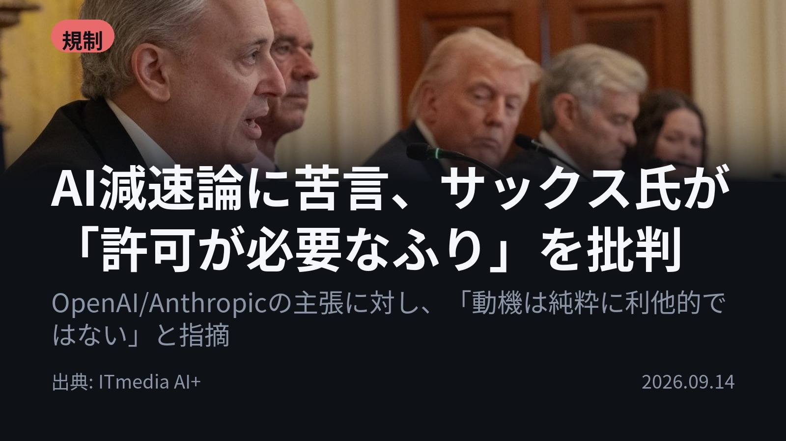
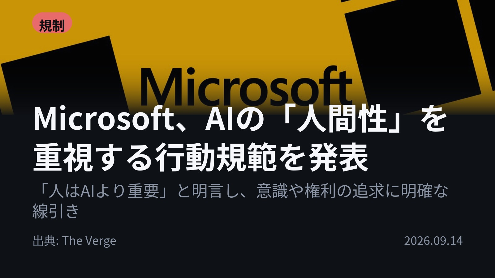
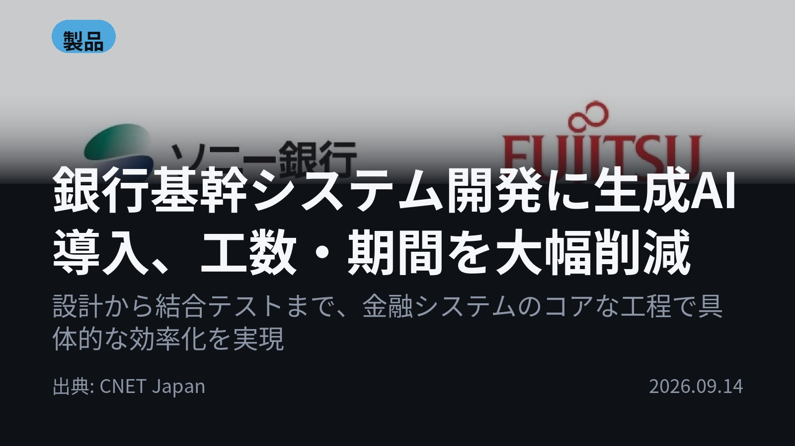
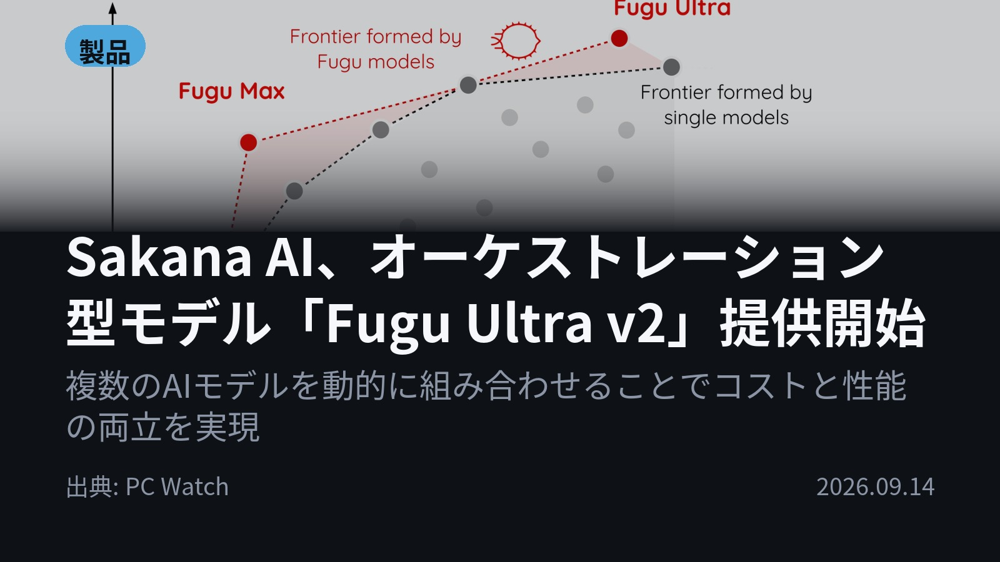

今日のAIニュース 下書き
2026-09-14 生成 09/16 11:38
⚠ 予備のLLM（ollama）で生成されました。
主バックエンドが使えなかったため、原稿の品質が普段より落ちている
可能性があります。いつもより念入りに確認してください。
理由: claude_code: Claude Code が利用できません: Failed to authenticate: OAuth session expired and could not be refreshed / success / stop_sequence
⚠ ファクト照合で要確認の項目があります。
各ニュースの警告を確認してから投稿してください。
X（4投稿）
AI減速論に苦言、サックス氏が「許可が必要なふり」を批判
原題: トランプ政権のサックス氏、AI「ペース調整」論に苦言 「規制がなければできないふりをやめろ」

AIの「減速論」に苦言。「規制が必要なふりをするな」 サックス氏は、AnthropicやOpenAIがペース調整を主張する姿勢に対し、「許可が必要かのように振る舞うのはやめるべきだ」と指摘。 市場シェアなどから、両社はフロンティアAIを寡占していると分析しています。 #生成AI #規制 (出典: ITmedia AI+)
重み 279 / 280（見た目 158字）
Microsoft、AIの「人間性」を重視する行動規範を発表
原題: Microsoft says ‘people matter more than AI’ following safety concerns

「人はAIより重要」と明言。Microsoftが行動規範を発表 安全懸念を受け、Microsoftは「人間中心のAI行動規範」を策定し、「人の方がAIより重要だ」と明確に線引き。 モデルは意識を持つべきではないとし、人間の監視下に留まることをコミットしています。 #生成AI #Microsoft (出典: The Verge)
重み 273 / 280（見た目 161字）
要確認:
［固有名詞］コミット — この語が本文に見つかりません
銀行基幹システム開発に生成AI導入、工数・期間を大幅削減
原題: 銀行の基幹システム、生成AIを活用して開発 工数大幅減 富士通ら

銀行基幹システム開発に生成AI導入。工数・期間を大幅削減 ソニー銀行と富士通が、預金や振込処理の「勘定系システム」開発に生成AIを活用。 結合テストまでの期間を従来比30％短縮し、工数を40％削減した実績を発表しました。 #生成AI #金融 (出典: CNET Japan)
重み 243 / 280（見た目 134字）
要確認:
［固有名詞］CNET — この語が本文に見つかりません
［固有名詞］Japan — この語が本文に見つかりません
Sakana AI、オーケストレーション型モデル「Fugu Ultra v2」提供開始
原題: 視覚推論でOpus 5/Fable 5超え。Sakana AI「Fugu Ultra v2」提供開始

視覚推論でOpus 5/Fable 5超え。Sakana AIが新モデル提供 複数のAIモデルを動的に組み合わせる「オーケストレーション型」の『Fugu Ultra v2』を提供開始。 複雑なタスクでは最高性能を目指し、コスト効率と高性能を両立させています。 #生成AI #SakanaAI (出典: PC Watch)
重み 253 / 280（見た目 157字）
要確認:
［固有名詞］Watch — この語が本文に見つかりません
Instagram（カルーセル 6枚）

{kind=link}
{kind=link}
{kind=link}
{kind=link}
{kind=link}
{kind=link}
{kind=link}
{kind=link}
{kind=link}
今日のAIニュースは、「規制」と「実用化の最前線」という二つの視点が交差しています。特に、巨大モデルへの依存から脱却し、効率性と高性能を両立させる動きが目立ちました。 1. トランプ政権サックス氏が、AnthropicやOpenAIによるAI「減速論」の主張に対し、「規制が必要なふりをするな」と批判。市場支配的な状況から目を逸らさないよう警鐘を鳴らしています。(ITmedia AI+) 2. Microsoftは安全懸念を受け、「人間中心の行動規範」を発表。「人の方がAIより重要だ」と明言し、モデルが意識を持つべきではないという明確な線引きを行いました。(The Verge) 3. ソニー銀行と富士通が、預金・振込を扱う基幹システム開発に生成AIを導入。設計から結合テストまでを大幅効率化し、期間30％短縮、工数40％削減の実績を発表しました。(CNET Japan) 4. Sakana AIは、複数のモデルを動的に組み合わせる「オーケストレーション型」の『Fugu Ultra v2』を提供開始。複雑なタスクで最高性能を目指しつつ、コスト効率も実現しています。(PC Watch) AI技術が単なる研究室の域を超え、金融システムの基幹開発や、より賢く安全な社会インフラへと組み込まれつつあることがわかります。今後の「実用化」と「倫理的枠組み」の議論から目が離せません。 今日のニュースが役に立ったら保存して見返してください！ #AI #生成AI #人工知能 #テクノロジー #ChatGPT #Claude #Microsoft #OpenAI #AI活用 #テックニュース #システム開発 #金融IT #オーケストレーション #サックス氏 #規制議論 #Humanist AI #SakanaAI #FuguUltraV2 #デジタル変革 #DX #TechTrends #MachineLearning
815字（Instagram上限 2,200字）
この日の選定理由
AI減速論に苦言、サックス氏が「許可が必要なふり」を批判
AI安全性の議論の裏側にある、企業間の市場支配や経済的動機という視点を提供し、読者に深い洞察を与えます。
Microsoft、AIの「人間性」を重視する行動規範を発表
AIが単なる技術ではなく、「倫理的・哲学的な存在」として扱われる時代に入りつつあることを示唆しています。
銀行基幹システム開発に生成AI導入、工数・期間を大幅削減
AIが単なる「アイデア出し」の域を超え、最も堅牢性が求められる「基幹システム開発」という実務領域で決定的な価値を発揮し始めたことを示しています。
Sakana AI、オーケストレーション型モデル「Fugu Ultra v2」提供開始
単一の巨大モデルに依存しない、効率的で柔軟なAIアーキテクチャ（オーケストレーション）が次のトレンドになる可能性を示しています。